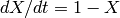
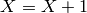
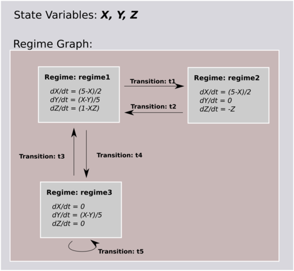
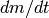
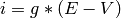
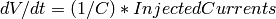

A NineML component can be considered in 2 parts: the internal dynamics and the external interface.
The dynamics are the internal mechanisms governing the behaviour of the component. The dynamics of a component are specified in terms of the following:
The dynamics of a component is defined by a set of state-variables; variables that can change either continuously or discontinuously as a function of time. The changes to state variables happen in two ways:
- through TimeDerivatives , which define the state variables evolution over time, for example 
- through StateAssignments, which make discrete changes to a StateVariable’s value, for example 
A component contains a Regime-graph; a graph consisting of Regimes at the vertices, and Transitions at the edges. At any given time, a component will be in a single Regime. A regime contains a set of TimeDerivatives, one for each StateVariable of the component, which define how the StateVariables evolve over time.
This diagram shows the dynamics block for an imaginary component.
This dynamics has 3 state variables, X,Y & Z, and a state graph with 3 regimes, regime1, regime2 & regime3. At any time, a component will be in one of these regimes, and the state variables will evolve accordingly.
Components can move between Regimes via transitions. There are 2 ways of triggering a transition:
When a transition is triggered; three things can happen:
During a transition, multiple StateAssignments and OutputEvents can occur. (For more on the resolution of Transition’s, see XX)
Notes:
Aliases are motivated from two problems;
Rather than writing long expressions for functions of state-variables, we can define an alias once. For example, we can define chains of aliases:
m_alpha = (alphaA + alphaB*V) / ( alphaC + exp((alphaD+V/alphaE)) )
m_beta = (betaA + betaB*V) / ( betaC + exp((betaD+V/betaE)) )
minf = m_alpha / (m_alpha + m_beta)
mtau = 1./(m_alpha+m_beta)
dm/dt = (1/C) * (minf-m)/mtau
In this case, m_alpha, m_beta, minf and mtau are all alias definitions. There is no reason we couldn’t expand our  description out to eliminate the these intermediate aliases, but the expression would be very long and difficult to read.
If we would like to communicate a value other than a simple state variable to to another component. For example, if we have a component representing a neuron, which has an internal StateVariable, ‘V’, we may be interested in transmitting a current, for example 
Note
Aliases are defined in the Dynamics, not in the Regime. This means that aliases are the same across all regimes.
As well as being able to communicate continuous values, components are also able to emit and receive Event s. Events are discrete notifications that are transmitted over EventPorts (Discussed in section XX). Since EventPorts have names, saying that we transmit a ‘event1’ for example would mean transmitting an event on the EventPort called ‘event1’. Events can be used to signal action potentials firing for example.
The interface is the external view of the component; what inputs and outputs the component exposes to other components and the parameters that can be set for the component.
The interface consists of Ports and Parameters.
Parameters allow us to define the dynamics of a component once, then adjust the behaviours by using different parameters. For example, if we are building an integrate-and-fire neuron, we can specify that the Reset-Voltage and the Firing-Threshold are parameters, write our dynamics in terms of these parameters, then use the User Layer to provide parameters to create different neurons. Parameters are set at the start of the simulation, and remain constant throughout.
Ports allow components to communicate between each other during a simulation. There are 2 types, AnalogPorts and EventPorts, and each can have different modes.
AnalogPorts transmit and receive continuous values, Alias es and StateVariables. AnalogPorts can have 3 modes:
SendPort - transmit data originating in this component which can be read by other components
- RecvPort - receive data from another components SendPort port.
Each recv port can be connected to one SendPort.
ReducePort - receive data from multiple SendPort . These differ from RecvPorts in that they can be connected to multiple SendPort . ReducePorts take an additional operator, reduce_op, which specifies how the data from multiple Send ports should be combined to produce a single value. Currently, the only supported operations is +, which sums the inputs. The motivation for ReducePorts is that it allows us to make our component definitions more general. For example, if we are defining a neuron, would define a ReducePort called, InjectedCurrents. This allows us to write the membrane equation for that neuron as:

Then, when we connect this neuron to synapses, current-clamps, etc, we simply need to connect the SendPorts containing the currents of these components onto the InjectedCurrents reduce-port, within having to change our original component definitions.
Event ports transmit discrete events. They are useful for example in simulation of integrate-and-fire neurons to notify components about neuron’s spiking. Event ports only have 2 modes:
SendPort - transmit events originating in this component which can be read by other components
- RecvPort - receive events from another components SendPort port.
Each recv port can be connected to multiple SendPort.
For example, a synapse component may have a RecvPort connected to the presynaptic neurons SendPort port. When the presynaptic neuron fires; it delivers an event to the synapse, which could cause it to produce current flow in a post-synaptic neuron.
Todo
This